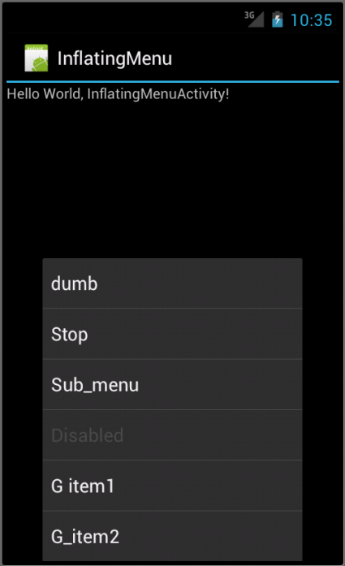

Android 4
10. Menus

This chapter
- 10.0 Creating Menus
- 10.1 Options Menu
- 10.2 Creating an Options Menu
- 10.3 Adding Menu
- 10.4 Adding Icons
- 10.5 Context Menu
- 10.6 Menu Example 2
- 10.7 Menu Example 3 - XML
Menus are an important part of any application. They provide familiar interfaces that reveal application functions and settings. Android offers an easy programming interface for developers to provide standardized application menus for various situations.
Android offers three fundamental types of application menus:
- Options Menu
This is the primary set of menu items for an Activity. It is revealed by pressing the device MENU key. Within the Options Menu are two groups of menu items:- Icon Menu
This is the collection of items initially visible at the bottom of the screen at the press of the MENU key. It supports a maximum of six menu items. These are the only menu items that support icons and the only menu items that do not support checkboxes or radio buttons. - Expanded Menu
This is a vertical list of items exposed by the "More" menu item from the Icon Menu. It exists only when the Icon Menu becomes over-loaded and is comprised of the sixth Option Menu item and the rest.
- Icon Menu
- Context Menu
This is a floating list of menu items that may appear when you perform a long-press on a View (such as a list item). - Submenu
This is a floating list of menu items that is revealed by an item in the Options Menu or a Context Menu. A Submenu item cannot support nested Submenus.
The Options Menu is an Android user interface component that provides standardized menus. It is opened by pressing the device MENU key.
When opened,the menus appear at the bottom of the screen. The Icon Menu is displayed holding the first six menu items. If more than six items are added to the Options Menu, then those that can't fit in the Icon Menu are revealed in the Expanded Menu, via the "More" menu item. The Expanded Menu is automatically added when there are more than six items.
The Options Menu is where we should include basic application functions and any necessary navigation items (e.g., to a home screen or application settings). We can also add Submenus for organizing topics and including extra menu functionality.
When this menu is opened for the first time, the Android system will call the Activity onCreateOptionsMenu() callback method. Override this method in our Activity and populate the Menu object given to us. We can populate the menu by inflating a menu resource that was defined in XML, or by calling add() for each item we'd like in the menu. This method adds a MenuItem, and returns the newly created object to you. We can use the returned MenuItem to set additional properties like an icon, a keyboard shortcut, an intent, and other settings for the item.
There are multiple add() methods. Usually, we'll want to use one that accepts an itemId argument. This is a unique integer that allows us to identify the item during a callback.
When a menu item is selected from the Options Menu, we'll receive a callback to the onOptionsItemSelected() method of our Activity. This callback passes us the MenuItem that has been selected. We can identify the item by requesting the itemId, with getItemId(), which returns the integer that was assigned with the add() method. Once we identify the menu item, we can take the appropriate action.
Rather than building activity's options menu during onCreate(), the way we wire up the rest of our UI, we instead need to implement onCreateOptionsMenu(). This callback receives an instance of Menu.
The first thing we should do is chain upward to the superclass (super.onCreateOptionsMenu(menu)), so the Android framework can add in any menu choices it feels are necessary. Then we can go about adding our own options.
If we will need to adjust the menu during our activity's use such as disable a now-invalid menu choice, just hold onto the Menu instance we receive in onCreateOptionsMenu(). Alternatively, we can implement onPrepareOptionsMenu(), which is called just before displaying the menu each time it is requested.
Given that we have received a Menu object via onCreateOptionsMenu(), we add menu choices by calling add(). There are many flavors of this method, which require some combination of the parameters as following:
- A group identifier (groupId):
This should be NONE unless we are creating a specific grouped set of menu choices for use with setGroupCheckable(). - A choice identifier (itemId):
This is for use in identifying this choice in the onOptionsItemSelected() callback when a menu choice is selected. - An order identifier (order):
To indicate where this menu choice should be slotted if the menu has Android-supplied choices alongside our own; for now, just use NONE. - The text of the menu choice, as a String or a resource ID (title).
Here is an example for Options Menu and handling item selections:
package com.bogotobogo.OptionsMenu;
import android.app.Activity;
import android.os.Bundle;
import android.view.Menu;
import android.view.MenuItem;
public class OptionsMenuActivity extends Activity {
private static final int MENU_NEW_GAME = Menu.FIRST;
private static final int MENU_QUIT = Menu.FIRST + 1;
/** Called when the activity is first created. */
@Override
public void onCreate(Bundle savedInstanceState) {
super.onCreate(savedInstanceState);
setContentView(R.layout.main);
}
/* Creates the menu items */
public boolean onCreateOptionsMenu(Menu menu) {
menu.add(0, MENU_NEW_GAME, 0, "New Game");
menu.add(0, MENU_QUIT, 0, "Quit");
return true;
}
/* Handles item selections */
public boolean onOptionsItemSelected(MenuItem item) {
switch (item.getItemId()) {
case MENU_NEW_GAME:
newGame();
return true;
case MENU_QUIT:
quit();
return true;
}
return false;
}
public void newGame() {}
public void quit() {}
}
The add() method used in this sample takes four arguments: groupId, itemId, order, and title. The groupId allows you to associate this menu item with a group of other items, in this example though, we ignore it. itemId is a unique integer that we give the MenuItem so that can identify it in the next callback. order allows us to define the display order of the item, by default, they are displayed by the order in which we add them. title is, of course, the name that goes on the menu item (this can also be a string resource, and we recommend you do it that way for easier localization).
Here is the result of the run:
Icons can also be added to items that appears in the Icon Menu with setIcon(). For example, if we modify one of the line in the Java code above after put icon into res/drawable/:
menu.add(0, MENU_QUIT, 0, "Quit") -> menu.add(0, MENU_QUIT, 0, "Quit").setIcon(R.drawable.ic_quit);
We'll get a new result with icon attached to the Quit menu for Android 2.3.
In general, we should create separate icons for all generalized screen densities, including low-, medium-, high-, and extra-high-density screens. This ensures that our icons will display properly across the range of devices on which our application can be installed. (see http://developer.android.com/guide/practices/ui_guidelines/icon_design_menu.html)
Instead of instantiating a Menu in our application code, we should define a menu and all its items in an XML menu resource, then inflate the menu resource (load it as a programmable object) in our application code. Using a menu resource to define our menu is a good practice because it separates the content for the menu from our application code. It's also easier to visualize the structure and content of a menu in XML.(see http://developer.android.com/guide/topics/ui/menus.html)
In the case of above example, we can do as following:
package com.bogotobogo.OptionsMenu;
import android.app.Activity;
import android.os.Bundle;
import android.view.Menu;
import android.view.MenuInflater;
import android.view.MenuItem;
public class OptionsMenuActivity extends Activity {
private static final int MENU_NEW_GAME = Menu.FIRST;
private static final int MENU_QUIT = Menu.FIRST + 1;
/** Called when the activity is first created. */
@Override
public void onCreate(Bundle savedInstanceState) {
super.onCreate(savedInstanceState);
setContentView(R.layout.main);
}
@Override
public boolean onCreateOptionsMenu(Menu menu) {
MenuInflater inflater = getMenuInflater();
inflater.inflate(R.menu.my_menu, menu);
return true;
}
/* Handles item selections */
public boolean onOptionsItemSelected(MenuItem item) {
switch (item.getItemId()) {
case MENU_NEW_GAME:
newGame();
return true;
case MENU_QUIT:
quit();
return true;
}
return false;
}
public void newGame() {}
public void quit() {}
}
with my_menu.xml:
<?xml version="1.0" encoding="utf-8"?>
<menu xmlns:android="http://schemas.android.com/apk/res/android">
<item android:id="@+id/new_game"
android:title="@string/new_game" />
<item android:id="@+id/quit"
android:icon="@drawable/ic_quit"
android:title="@string/quit" />
</menu>
and strings.xml
<?xml version="1.0" encoding="utf-8"?>
<resources>
<string name="hello">Hello World, OptionsMenuActivity!</string>
<string name="app_name">OptionsMenu</string>
<string name="new_game">New Game</string>
<string name="quit">Quit</string>
</resources>
But we could not put the quit icon on Android 4.0, and it's because for Android 3.0 and above, the options menu has been superseded by the Action Bar. But if we use Action Bar, we can display the menu icons:
And with modified my_menu.xml:
<?xml version="1.0" encoding="utf-8"?>
<menu xmlns:android="http://schemas.android.com/apk/res/android">
<item android:id="@+id/new_game"
android:icon="@drawable/ic_new"
android:showAsAction="ifRoom|withText"
android:title="@string/new_game" />
<item android:id="@+id/quit"
android:icon="@drawable/ic_quit"
android:showAsAction="ifRoom|withText"
android:title="@string/quit" />
</menu>
The Android context menu is similar, in concept, to the menu revealed with a "right-click" on a PC. When a view is registered to a context menu, performing a "long-press" (press and hold for about two seconds) on the object will reveal a floating menu that provides functions relating to that item. Context menus can be registered to any View object, however, they are most often used for items in a ListView, which helpfully indicates the presence of the context menu by transforming the background color of the ListView item when pressed.
Here is our Java code for the ContextMenu example.
package com.bogotobogo.ContextMenuA;
import android.os.Bundle;
import android.app.Activity;
import android.view.ContextMenu;
import android.view.Menu;
import android.view.MenuItem;
import android.view.View;
import android.view.ContextMenu.ContextMenuInfo;
import android.widget.AdapterView;
import android.widget.ArrayAdapter;
import android.widget.ListView;
import android.widget.TextView;
public class ContextMenuAActivity extends Activity {
String[] phones={
"HTC Rezound", "Samsung Galaxy S II Skyrocket",
"Samsung Galaxy Nexus", "Motorola Droid Razr",
"Samsung Galaxy S", "Samsung Epic Touch 4G",
"iPhone 4S", "HTC Titan"
};
private static final int MENU_NEW_GAME = Menu.FIRST;
private static final int MENU_QUIT = Menu.FIRST + 1;
private static final int MENU_EDIT = Menu.FIRST + 2;
private static final int MENU_DELETE = Menu.FIRST + 3;
@Override
public void onCreate(Bundle savedInstanceState) {
super.onCreate(savedInstanceState);
setContentView(R.layout.main);
ListView list = (ListView)findViewById(R.id.list);
ArrayAdapter<String> adapter =
new ArrayAdapter<String>(this, R.layout.listitem, phones);
list.setAdapter(adapter);
list.setAdapter(adapter);
registerForContextMenu(list);
}
@Override
public void onCreateContextMenu(ContextMenu menu, View v,
ContextMenuInfo menuInfo) {
if (v.getId()==R.id.list) {
AdapterView.AdapterContextMenuInfo info
= (AdapterView.AdapterContextMenuInfo)menuInfo;
menu.setHeaderTitle(phones[info.position]);
menu.add(0, MENU_EDIT, 0, "Edit");
menu.add(0, MENU_DELETE, 0, "Delete");
}
}
/* Creates the menu items */
@Override
public boolean onCreateOptionsMenu(Menu menu) {
menu.add(0, MENU_NEW_GAME, 0, "New Game");
menu.add(0, MENU_QUIT, 0, "Quit").setIcon(R.drawable.ic_quit);
return true;
}
/* Handles item selections */
@Override
public boolean onOptionsItemSelected(MenuItem item) {
switch (item.getItemId()) {
case MENU_NEW_GAME:
return true;
case MENU_QUIT:
return true;
}
return false;
}
@Override
public boolean onContextItemSelected(MenuItem item) {
TextView text = (TextView)findViewById(R.id.footer);
switch (item.getItemId()) {
case MENU_EDIT:
text.setText("Edit selected");
return true;
case MENU_DELETE:
text.setText("Delete selected");
return true;
default:
return super.onContextItemSelected(item);
}
}
}
To create a context menu, you must override the Activity's context menu callback methods: onCreateContextMenu() and onContextItemSelected().
Inside the onCreateContextMenu() callback method, you can add menu items using one of the add() methods, or by inflating a menu resource that was defined in XML. Then, register a ContextMenu for the View, with registerForContextMenu().
In onCreateContextMenu(), we are given not only the ContextMenu to which we will add menu, but also the View that was selected and a ContextMenuInfo object, which provides additional information about the object that was selected. In this example, nothing special is done in onCreateContextMenu(), just a couple items are added as usual.
In the onContextItemSelected() callback, we request the getItemId() from the MenuItem, which provides information about the currently selected item. All we need from this is the list ID for the selected item, so whether editing a note or deleting it. This ID can passed to the "edit()" or "delete" methods though they are not implemented in the example. Here, we are just writing a text to the footer to tell the user which menu has been selected.
Note that we register this context menu for all the items in a ListView.
Then, we pass the entire ListView to the registerForContextMenu(View) method:
ListView list = (ListView)findViewById(R.id.list);
ArrayAdapter<String> adapter =
new ArrayAdapter<String>(this, R.layout.listitem, phones);
list.setAdapter(adapter);
registerForContextMenu(list);
With layout file: main.xml:
<?xml version="1.0" encoding="utf-8"?>
<LinearLayout xmlns:android="http://schemas.android.com/apk/res/android"
android:layout_width="fill_parent"
android:layout_height="fill_parent"
android:orientation="vertical">
<ListView
android:id="@+id/list"
android:layout_width="fill_parent"
android:layout_height="0px"
android:layout_weight="1"/>
<TextView
android:id="@+id/footer"
android:layout_width="fill_parent"
android:layout_height="60dip"
android:text="@string/footer"
android:padding="4dip"
android:background="#FF666666"/>
</LinearLayout>
and listitem.xml:
<?xml version="1.0" encoding="utf-8"?> <TextView xmlns:android="http://schemas.android.com/apk/res/android" android:layout_width="fill_parent" android:layout_height="wrap_content" android:textSize="24dip" android:padding="8dip"/>
The "footer" string used in main.xml is defined in res/values/strings.xml.
<?xml version="1.0" encoding="utf-8"?>
<resources>
<string name="hello">Hello World, ContextMenuA!</string>
<string name="app_name">ContextMenuA</string>
<string name="footer">Long click to get context menu</string>
</resources>
When it is fire up :
Notice the lower part of screen which is "footer" is used as a space for a message. At the long click, we should see context menu.

We do not have any specific actions at the selection on the context menu, but it shows what choice has been made in the footer section. In this case, the message "Edit selected".
Here is the Java code we're using in this example:
package com.bogotobogo.ContextMenu2;
import android.os.Bundle;
import android.app.ListActivity;
import android.view.ContextMenu;
import android.view.Menu;
import android.view.MenuItem;
import android.view.View;
import android.widget.ArrayAdapter;
import android.widget.ListView;
import android.widget.TextView;
public class ContextMenu2Activity extends ListActivity {
TextView selection;
String[] items={
"HTC Rezound", "Samsung Galaxy S II Skyrocket",
"Samsung Galaxy Nexus", "Motorola Droid Razr",
"Samsung Galaxy S", "Samsung Epic Touch 4G",
"iPhone 4S", "HTC Titan"
};
public static final int EIGHT_ID = Menu.FIRST+1;
public static final int SIXTEEN_ID = Menu.FIRST+2;
public static final int TWENTY_FOUR_ID = Menu.FIRST+3;
public static final int TWO_ID = Menu.FIRST+4;
public static final int THIRTY_TWO_ID = Menu.FIRST+5;
public static final int FORTY_ID = Menu.FIRST+6;
public static final int ONE_ID = Menu.FIRST+7;
@Override
public void onCreate(Bundle icicle) {
super.onCreate(icicle);
setContentView(R.layout.main);
setListAdapter(new ArrayAdapter<String>(this,
android.R.layout.simple_list_item_1, items));
selection=(TextView)findViewById(R.id.selection);
registerForContextMenu(getListView());
}
public void onListItemClick(ListView parent, View v,
int position, long id) {
selection.setText(items[position]);
}
@Override
public void onCreateContextMenu(ContextMenu menu, View v,
ContextMenu.ContextMenuInfo menuInfo) {
populateMenu(menu);
}
@Override
public boolean onCreateOptionsMenu(Menu menu) {
populateMenu(menu);
return(super.onCreateOptionsMenu(menu));
}
@Override
public boolean onOptionsItemSelected(MenuItem item) {
return(applyMenuChoice(item) ||
super.onOptionsItemSelected(item));
}
@Override
public boolean onContextItemSelected(MenuItem item) {
return(applyMenuChoice(item) ||
super.onContextItemSelected(item));
}
private void populateMenu(Menu menu) {
menu.add(Menu.NONE, ONE_ID, Menu.NONE, "1 Pixel");
menu.add(Menu.NONE, TWO_ID, Menu.NONE, "2 Pixels");
menu.add(Menu.NONE, EIGHT_ID, Menu.NONE, "8 Pixels");
menu.add(Menu.NONE, SIXTEEN_ID, Menu.NONE, "16 Pixels");
menu.add(Menu.NONE, TWENTY_FOUR_ID, Menu.NONE, "24 Pixels");
menu.add(Menu.NONE, THIRTY_TWO_ID, Menu.NONE, "32 Pixels");
menu.add(Menu.NONE, FORTY_ID, Menu.NONE, "40 Pixels");
}
private boolean applyMenuChoice(MenuItem item) {
switch (item.getItemId()) {
case ONE_ID:
getListView().setDividerHeight(1);
return(true);
case EIGHT_ID:
getListView().setDividerHeight(8);
return(true);
case SIXTEEN_ID:
getListView().setDividerHeight(16);
return(true);
case TWENTY_FOUR_ID:
getListView().setDividerHeight(24);
return(true);
case TWO_ID:
getListView().setDividerHeight(2);
return(true);
case THIRTY_TWO_ID:
getListView().setDividerHeight(32);
return(true);
case FORTY_ID:
getListView().setDividerHeight(40);
return(true);
}
return(false);
}
}
In onCreate(), we register our list widget as having a context menu, which we'll fill in via our populateMenu() private method, by way of onCreateContextMenu().
public void onCreate(Bundle icicle) {
super.onCreate(icicle);
setContentView(R.layout.main);
setListAdapter(new ArrayAdapter<String>(this,
android.R.layout.simple_list_item_1, items));
selection=(TextView)findViewById(R.id.selection);
registerForContextMenu(getListView());
}
We also implement the onCreateOptionsMenu() callback, indicating that our activity also has an options menu. Once again, we delegate to populateMenu() to fill the menu.
public boolean onCreateOptionsMenu(Menu menu) {
populateMenu(menu);
return(super.onCreateOptionsMenu(menu));
}
Our implementations of onOptionsItemSelected() for options menu selections and onContextItemSelected() for context menu selections. Both delegate to a private applyMenuChoice() method, plus chaining upward to the superclass if none of our menu choices was the one selected by the user.
public boolean onOptionsItemSelected(MenuItem item) {
return(applyMenuChoice(item) ||
super.onOptionsItemSelected(item));
}
.....
public boolean onContextItemSelected(MenuItem item) {
return(applyMenuChoice(item) ||
super.onContextItemSelected(item));
}
In applyMenuChoice(), we add seven menu choices, each with a unique identifier.
private boolean applyMenuChoice(MenuItem item) {
switch (item.getItemId()) {
case ONE_ID:
getListView().setDividerHeight(1);
return(true);
case EIGHT_ID:
getListView().setDividerHeight(8);
return(true);
case SIXTEEN_ID:
getListView().setDividerHeight(16);
return(true);
case TWENTY_FOUR_ID:
getListView().setDividerHeight(24);
return(true);
case TWO_ID:
getListView().setDividerHeight(2);
return(true);
case THIRTY_TWO_ID:
getListView().setDividerHeight(32);
return(true);
case FORTY_ID:
getListView().setDividerHeight(40);
return(true);
}
return(false);
}
The main.xml should be like this:
<?xml version="1.0" encoding="utf-8"?>
<LinearLayout xmlns:android="http://schemas.android.com/apk/res/android"
android:layout_width="fill_parent"
android:layout_height="fill_parent"
android:orientation="vertical" >
<TextView
android:id="@+id/selection"
android:layout_width="fill_parent"
android:layout_height="wrap_content"
android:text="@string/hello" />
<ListView android:id="@android:id/list"
android:layout_width="fill_parent"
android:layout_height="wrap_content"
android:drawSelectorOnTop="false" />
</LinearLayout>
At the initial launch, we'll have:
When we press the Menu button:
At 40 Pixels, we get:
Context Menu, tap and hold:
We want to put menu XML in res/menu/ of our project tree, alongside the other types of resources that our project might employ. Like layouts, we may have several menu XML files in the project, each with its own filename and the .xml extension.
Layout:
<?xml version="1.0" encoding="utf-8"?> <LinearLayout xmlns:android="http://schemas.android.com/apk/res/android" android:orientation="vertical" android:layout_width="fill_parent" android:layout_height="fill_parent"> <TextView android:layout_width="fill_parent" android:layout_height="wrap_content" android:text="Click on the option menu and play with the choices!"/> </LinearLayout>
Menus in XML:
<?xml version="1.0" encoding="utf-8"?> <menu xmlns:android="http://schemas.android.com/apk/res/android"> <item android:id="@+id/close" android:title="Close" android:orderInCategory="3" android:icon="@drawable/eject" /> <item android:id="@+id/no_icon" android:orderInCategory="2" android:title="Sans Icon" /> <item android:id="@+id/disabled" android:orderInCategory="4" android:enabled="false" android:title="Disabled" /> <group android:id="@+id/other_stuff" android:menuCategory="secondary" android:visible="false"> <item android:id="@+id/later" android:orderInCategory="0" android:title="2nd-To-Last" /> <item android:id="@+id/last" android:orderInCategory="1" android:title="Last" /> </group> <item android:id="@+id/submenu" android:orderInCategory="3" android:title="A Submenu"> <menu> <item android:id="@+id/non_ghost" android:title="Non-Ghost" android:visible="true" android:alphabeticShortcut="n" /> <item android:id="@+id/ghost" android:title="A Ghost" android:visible="false" android:alphabeticShortcut="g" /> </menu> </item> </menu>
Here are the facts we need to know about the XML for menus:
- We must start with a menu root element.
- Inside a menu element are item elements and group elements. The group element represents a collection of menu items that can be operated upon as a group.
- When creating our menu resource, we can create a submenu by adding a <menu> element as the child of an <item>. In other words, submenus are specified by adding a menu element as a child of an item element, using this new menu element to describe the contents of the submenu.
- If we want to detect when an item is chosen, or to reference an item or group from our Java code, be sure to apply an android:id, just as do with View layout XML.
Our Java code:
package com.bogotobogo.InflatingMenu;
import android.app.Activity;
import android.os.Bundle;
import android.view.Menu;
import android.view.MenuInflater;
import android.view.MenuItem;
import android.widget.Toast;
import java.util.HashMap;
import java.util.Map;
public class InflatingMenuActivity extends Activity {
private final static Map<Integer,String> MESSAGES;
private boolean groupItemsVisible=false;
private Menu theMenu=null;
static {
MESSAGES=new HashMap<Integer,String>();
MESSAGES.put(R.id.stop,"Stop it!");
MESSAGES.put(R.id.dumb, "Dumb and dumber");
MESSAGES.put(R.id.group_item1, "Group item1");
MESSAGES.put(R.id.group_item2, "Group item2");
MESSAGES.put(R.id.do_something, "Do something");
MESSAGES.put(R.id.do_nothing, "Do nothing");
};
@Override
public void onCreate(Bundle savedInstanceState) {
super.onCreate(savedInstanceState);
setContentView(R.layout.main);
}
@Override
public boolean onCreateOptionsMenu(Menu menu) {
theMenu=menu;
new MenuInflater(getApplication())
.inflate(R.menu.my_menu, menu);
return(super.onCreateOptionsMenu(menu));
}
@Override
public boolean onOptionsItemSelected(MenuItem item) {
if (item.getItemId()==R.id.do_something) {
groupItemsVisible=!groupItemsVisible;
theMenu.setGroupVisible(R.id.group_items, groupItemsVisible);
}
String message=MESSAGES.get(item.getItemId());
if (message!=null) {
Toast.makeText(this, message, Toast.LENGTH_SHORT).show();
return(true);
}
return(super.onOptionsItemSelected(item));
}
}
Once menus defined in XML, using the menus is easy. Just create a MenuInflater and tell it to inflate our menu:
@Override
public boolean onCreateOptionsMenu(Menu menu) {
theMenu=menu;
new MenuInflater(getApplication())
.inflate(R.menu.my_menu, menu);
return(super.onCreateOptionsMenu(menu));
}
The layout file, main.xml:
<?xml version="1.0" encoding="utf-8"?>
<LinearLayout xmlns:android="http://schemas.android.com/apk/res/android"
android:layout_width="fill_parent"
android:layout_height="fill_parent"
android:orientation="vertical" >
<TextView
android:layout_width="fill_parent"
android:layout_height="wrap_content"
android:text="@string/hello" />
</LinearLayout>
The menu file res/menu/my_menu.xml should look like this:
<?xml version="1.0" encoding="utf-8"?>
<menu xmlns:android="http://schemas.android.com/apk/res/android">
<item android:id="@+id/stop"
android:title="@string/stop"
android:orderInCategory="3"
android:icon="@drawable/eject" />
<item android:id="@+id/dumb"
android:orderInCategory="2"
android:title="dumb" />
<item android:id="@+id/disabled"
android:orderInCategory="4"
android:enabled="false"
android:title="@string/disabled"/>
<group android:id="@+id/group_items"
android:menuCategory="secondary"
android:visible="false">
<item android:id="@+id/group_item1"
android:title="@string/group_item1" />
<item android:id="@+id/group_item2"
android:title="@string/group_item2" />
</group>
<item android:id="@+id/submenu"
android:orderInCategory="3"
android:title="@string/submenu">
<menu>
<item android:id="@+id/do_something"
android:title="@string/do_something"
android:visible="true"
android:alphabeticShortcut="s" />
<item android:id="@+id/do_nothing"
android:title="@string/do_nothing"
android:visible="false"
android:alphabeticShortcut="n" />
</menu>
</item>
</menu>
Finally, the strings.xml:
<?xml version="1.0" encoding="utf-8"?>
<resources>
<string name="hello">Hello World, InflatingMenuActivity!</string>
<string name="app_name">InflatingMenu</string>
<string name="new_game">New Game</string>
<string name="quit">Quit</string>
<string name="stop">Stop</string>
<string name="dumb">Dumb</string>
<string name="disabled">Disabled</string>
<string name="group_items">Group Items</string>
<string name="group_item1">G item1</string>
<string name="group_item2">G_item2</string>
<string name="submenu">Sub_menu</string>
<string name="do_something">Do Something</string>
<string name="do_nothing">Do Nothing</string>
</resources>
The results for Android 4.0 are:
If we click the "Dumb" button:
If we click the "Submenu" button:
If we click the main "Menu" button after we hit "Submenu":
Final icon must be exported as a transparent PNG file. Do not include a background color.
The size of the icon should be like this:
- high-density (hdpi)
Full Asset: 72 x 72 px
Icon: 48 x 48 px
Square Icon: 44 x 44 px
- medium-density (mdpi)
Full Asset: 48 x 48 px
Icon: 32 x 32 px
Square Icon: 30 x 30 px
- low-density (ldpi)
Full Asset: 36 x 36 px
Icon: 24 x 24 px
Square Icon: 22 x 22 px
For more details, see http://developer.android.com/guide/practices/ui_guidelines/icon_design_menu.html.
If we modify one of the lines of the menu file res/menu/my_menu.xml in the section 10.7,
<?xml version="1.0" encoding="utf-8"?>
<menu xmlns:android="http://schemas.android.com/apk/res/android">
<item android:id="@+id/stop"
android:title="@string/stop"
android:orderInCategory="3"
android:icon="@drawable/eject"
android:showAsAction="ifRoom|withText" />
<item android:id="@+id/dumb"
android:orderInCategory="2"
android:title="dumb" />
<item android:id="@+id/disabled"
android:orderInCategory="4"
android:enabled="false"
android:title="@string/disabled"/>
<group android:id="@+id/group_items"
android:menuCategory="secondary"
android:visible="false">
<item android:id="@+id/group_item1"
android:title="@string/group_item1" />
<item android:id="@+id/group_item2"
android:title="@string/group_item2" />
</group>
<item android:id="@+id/submenu"
android:orderInCategory="3"
android:title="@string/submenu">
<menu>
<item android:id="@+id/do_something"
android:title="@string/do_something"
android:visible="true"
android:alphabeticShortcut="s" />
<item android:id="@+id/do_nothing"
android:title="@string/do_nothing"
android:visible="false"
android:alphabeticShortcut="n" />
</menu>
</item>
</menu>
we can see the menu icon on the right corner of the screen, and it should look like this:
In the XML file, we requested the menu item to appear as an action item by declaring android:showAsAction="ifRoom" for the <item> element. This way, the menu item appears in the action bar for quick access only if there is room available. If there's not enough room, the item appears in the overflow menu.
If our menu item supplies both a title and an icon-with the android:title and android:icon attributes-then the action item shows only the icon by default. If we want to display the text title, add "withText" to the android:showAsAction attribute.
Below is the excerpts from http://developer.android.com/guide/topics/ui/actionbar.html.
The action bar is a window feature that identifies the application and user location, and provides user actions and navigation modes. You should use the action bar in most activities that need to prominently present user actions or global navigation, because the action bar offers users a consistent interface across applications and the system gracefully adapts the action bar's appearance for different screen configurations. You can control the behaviors and visibility of the action bar with the ActionBar APIs, which were added in Android 3.0 (API level 11).
The primary goals of the action bar are to:
Provide a dedicated space for identifying the application brand and user location.
This is accomplished with the app icon or logo on the left side and the activity title. You might choose to remove the activity title, however, if the current view is identified by a navigation label, such as the currently selected tab.
Provide consistent navigation and view refinement across different applications.
The action bar provides built-in tab navigation for switching between fragments. It also offers a drop-down list we can use as an alternative navigation mode or to refine the current view (such as to sort a list by different criteria).
Make key actions for the activity (such as "search", "create", "share", etc.) prominent and accessible to the user in a predictable way.
We can provide instant access to key user actions by placing items from the options menu directly in the action bar, as "action items." Action items can also provide an "action view," which provides an embedded widget for even more immediate action behaviors. Menu items that are not promoted to an action item are available in the overflow menu, revealed by either the device MENU button (when available) or by an "overflow menu" button in the action bar (when the device does not include a MENU button).
Ph.D. / Golden Gate Ave, San Francisco / Seoul National Univ / Carnegie Mellon / UC Berkeley / DevOps / Deep Learning / Visualization